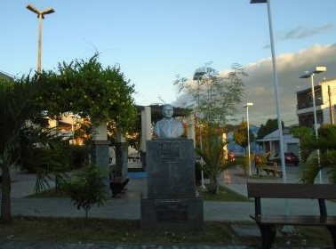

Informações técnicas sobre relevo, população, IDH etc.
| INFORMAÇÕES | |
|---|---|
| Municípios limítrofes | Norte: Quixeramobim e Banabuiú, Leste: Solonópole, Sul: Deputado Irapuan Pinheiro, Oeste: Senador Pompeu. |
| Fundação | 22 de setembro de 1957 (63 anos) |
| População total | 6 533 hab. |
| Densidade | 85,8 hab./km² |
| Área total | 76,100 km² |
| Clima | Tropical semiárido |
| Altitude | 70 m |
| IDH | 0,639 — médio |
| PIB | R$ 18 991,290 mil |
| INFORMAÇÕES TERRITORIAIS | |
|---|---|
| Número de habitantes | 6 533 habitantes |
| Superfície de Pacujá |
7 613 hectares
76,13 km² |
| Densidade populacional | 85,8 ha./km² |
| Altitude de Pacujá | 141 metros de altitude |
| Coordenadas geográficas decimais |
Latitude:
-3.98951
Longitude: -40.6983 |
| Coordenadas geográficas sexagesimais | Latitude: 3° 59' 22'' Sul , Longitude: 40° 41' 54'' Oeste |
| INFORMAÇÕES DO MUNICÍPIO | |
|---|---|
| Endereço da Prefeitura Municipal de Pacujá |
Pacujá
Prefeitura de Pacujá
Rua 22 de Setembro, 325 Pacujá - CE, 62180-000 Brasil |
| Telefone da prefeitura |
(88) 3641-1133
Internacional: +55 88 3641-1133 |
| Fax |
(88) 3641-1085
Internacional: +55 88 3641-1085 |
| Endereço electrónicoda prefeitura |
Não Disponível
|
| gmpacuja@yahoo.com.br | pacuja.ce.gov.br |
| INFORMAÇÕES DO ADMINISTRATIVAS | ||
|---|---|---|
| Prefeito de Pacujá | Raimundo Rodrigues de Sousa Filho | |
| Partido politico | PDT | |
| INFORMAÇÕES DE TRANSPORTE | |
|---|---|
| Transporte urbano disponível | Não Disponível |
| Aeroporto |
Aeroporto de Sobral 52.7 km
Aeroporto Pinto Martins
121 km
Aeroporto Internacional Prefeito Dr.João Silva Filho
167.5 km
|
| INFORMAÇÕES DE DISTÂNCIA A OUTRAS CIDADES | ||
|---|---|---|
| São Paulo : 2269 km | Rio de Janeiro : 2123 km | Brasília : 1533 km |
| Salvador : 1028 km | Belo Horizonte : 1797 km | Manaus : 2150 km |
| Curitiba : 2557 km | Recife : 787 km | Goiânia : 1694 km |
| Belém :912 km | Porto Alegre : 3103 km | Guarulhos : 2249 km |
| Campinas : 2215 km | São Luís : 433 km mais perto | São Gonçalo : 2635 km |
| Distância calculada em linha reta! | ||
Conheça mais sobre a história da Pacujá.
Suas origens remontam ao Século XIX. Distrito criado com a denominação de Pacujá, pela lei nº 2054 de 24 de novembro de 1883, sendo subordinado ao município de Ibiapina. Foi elevado à categoria de município com a denominação de Pacujá, pela lei estadual nº 3692, de 17 de julho de 1957
Saiba mais sobre os melhores lugares e o que fazer em Pacujá.
Praça Domingos Francisco Alves
A praça Domingos Francisco Alves além de bela é um lugar aberto, com ambiente leve e arejado. Propício para encontros e atividades de lazer.
Endereço: Centro
Veja como chegar nos melhores pontos de Pacujá